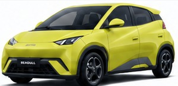

BYD
Seagull 2026
El eléctrico de entrada
Para quien quiere dejar la gasolina gastando lo menos posible y necesita un auto práctico para la rutina urbana.
Compite con: Geely Xingyuan, Wuling Bingo y Changan Lumin.

405 km
Conserva el alcance que hace útil al Seagull para varios días de ciudad, sin pagar por equipamiento que quizá no necesitas.
505 km · Smart Driving
Más autonomía y asistencias para quien quiere que este compacto funcione como su vehículo principal, no solo como segundo auto.
¿Qué cambia realmente?
Ganas más margen para días intensos, trayectos interurbanos y menos visitas al cargador.
Añade el paquete de conducción asistida y funciones que justifican el salto si será tu auto principal.
Recomendación AutoNomy: 405 km si el precio manda. 505 km si quieres conservarlo varios años y usarlo para algo más que recorridos cortos.
Las diferencias que sí influyen en la compra
| Parámetro | 405 km | 505 km Smart Driving |
|---|---|---|
| Autonomía CLTC | 405 km | 505 km |
| Potencia | Dato por confirmar | 60 kW preliminar |
| Carga rápida | DC | DC mejorada |
| Asistencias de conducción | Esenciales | Paquete avanzado |
| Uso recomendado | Ciudad | Ciudad + trayectos interurbanos |
| Tracción | Delantera | Delantera |
| Tipo de batería | LFP Blade | LFP Blade |
| Asientos | 4 | 4 |
| Dimensiones | 3.780 × 1.715 × 1.540 mm | |
| Distancia entre ejes | 2.500 mm | |
| Cámara | Según versión | 360° / paquete avanzado |
| Conectividad | DiLink | DiLink + funciones ampliadas |
| V2L | Disponible | Disponible |
| Precio | Provisional | Provisional |